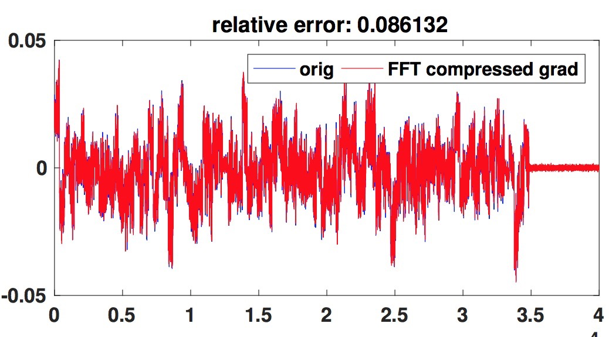

|
解壁伟 (Biwei Xie)
office at 1011F
Center for Advanced Computer Systems
Institute of Computing Technology, Chinese Academy of Sciences
Haidian district, Beijing, China
Google Scholar
|
GitHub
|
My Mission:
I'm an assistant professor working with Prof. Yungang Bao in the Center for Advanced Computer Systems (ACS) at Institute of Computing Technology (ICT), Chinese Academy of Sciences (CAS).
I received my Ph.D degree in 2018 at ICT, supervised by Prof. Lixin Zhang and Prof. Jianfeng Zhan, and my master degree at Beijing University of Technology in 2012, supervised by Prof. Jingsha He.
I acquired my bachelor degree at Hebei University of Science and Technology in 2009.
In addition to my advisor, I also work closely with Xu Liu and Sally.A.Mckee.
My research interests include: benchmarking, workload characterization, performance optimization, operating system, and computer architecture design.
I'm a Ph.D. student at the CS department of Brown University, advised by Prof.Rodrigo Fonseca.
Before Brown, I was a OMSCS student at Gatech while being a full time software developer at Dow Jones
. I acquired my bachelor degree from
University of Electronic Science and Technology of China (UESTC) at the beautiful Qing Shui He campus in 2011. In addition to my advisor, I also work closely with
Yiyang Zhao,
Yuu Jinnai,
Yi Yang,
Wei Wu,
George Bosilca,
Jack Dongarra, and
Maurice Herlihy.
in Preparation:
|  |
|
Biwei Xie, Zhen Jia, Wanling Gao, Jianfeng Zhan, Yungang Bao
The Impact of Data Pattern on SpMV performance
|
|
|
Publications:
2018
 |
|
Wanling Gao, Jianfeng Zhan, Lei Wang, Chunjie Luo, Daoyi Zheng, Fei Tang, Biwei Xie, Chen Zheng, Xu Wen, Xiwen He, Hainan Ye, and Rui Ren
Data Motifs: A Lens Towards Fully Understanding Big Data and AI Workloads
In Proceedings of the 27th International Conference on Parallel Architectures and Compilation Techniques(PACT2018)
|
|
|
 |
|
 |
|
2016
2015
 |
|
Biwei Xie, Xu Liu, Jianfeng Zhan, Zhen Jia, Yuqing Zhu, Lei Wang, and Lixin Zhang
Characterizing Data Analytics Workloads on Intel Xeon Phi
In Proceedings of the 2015 IEEE International Symposium on Workload Characterization, short paper (IISWC2015)
|
|
|
Patent:
- EP3104275A4, Data processing method, device and system; Lixin Zhang and Biwei Xie
Academic Services:
- External Reviewer of Parallel Architectures and Compilation Techniques (PACT), 2018
- Reviewer of Transactions on Parallel and Distributed Systems (TPDS), 2018